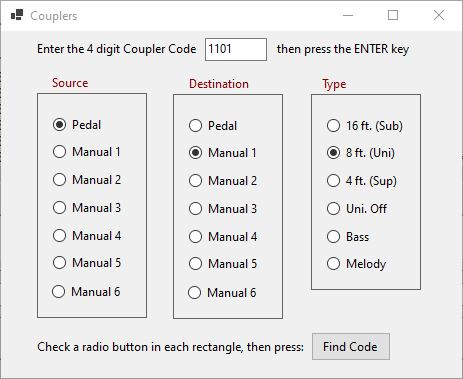
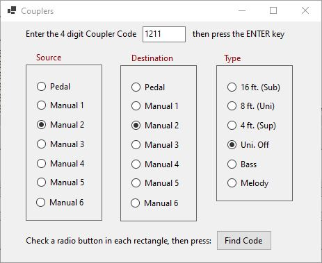

Hauptwerk assigns the same internal value to the two Types "8 ft.
(Unison)" and "Unison Off". If the Source and Destination are the
same, Hauptwerk will treat this single internal Type value as
representing "Unison Off"; if they are different, the Type will be
interpreted as being an intra-manual "8 ft. (Unison)" coupling.
The Couplers form translates bi-directionally between Hauptwerk's
internal Coupler-Codes and the functions those Codes represent. To
translate a Code into its Functional representation, the user
enters the 4-digit Code into the textbox at the center-top of the
form, then presses their Enter-key: AECHO will decode the integer,
setting the radio-buttons to represent the Code's functional
meaning (or display a warning message if the Code is invalid.)
Conversely, to encode a Function, the user sets the radio-buttons
for each of the three categories, then clicks the Find Code
button: AECHO will calculate the correct encoding, and display the
resulting 4-digit number in the textbox at the center-top of the
form. If the radio-button combination is invalid e.g., choosing
the same Source & Destination while selecting the Type "8 ft.
(Uni)", AECHO will display a warning.
To close the Couplers form, click the X control at the upper-right
corner of the form's window.
Examples: the first example, on the left, shows the result of
entering the Code "1101" and then typing the Enter-key: this Code
represent a Pedal to Manual-1 8' coupler. The second example, on
the right, show the conversion of the Coupler Manual-2 Unison Off
to its code "1211".
|  |
 |
| Translate Code "1101" into its Function "Ped to Man-1 8" | Translate Function "Man-2
Unison Off" to its Code "1211" |